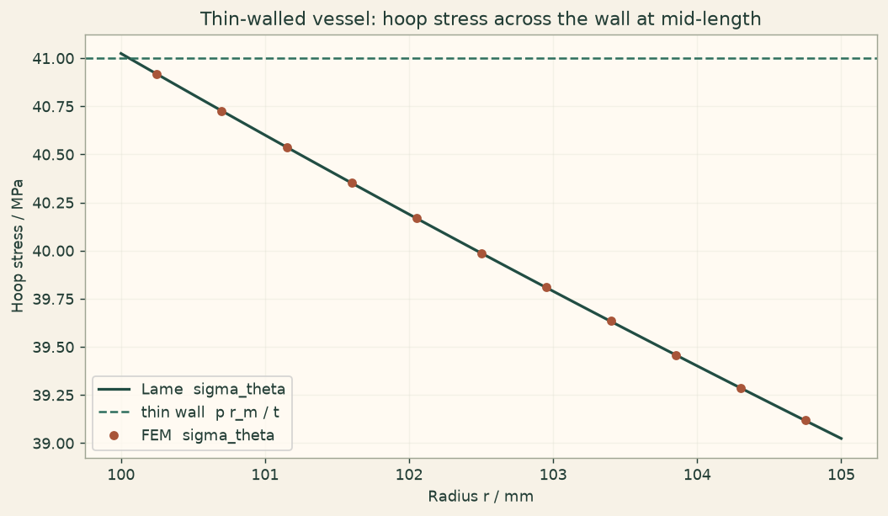

Docs › Examples › Thin-walled pressure vessel
Solid mechanics · 3D
Thin-walled pressure vessel
A thin-walled cylinder under internal pressure, graded against the thin-wall hoop stress and the exact Lame solution.

What it computes
OneSimulation solves the linear-elastic equilibrium of a thin annular cylinder with internal pressure and clamped ends.
What it checks
The mid-wall hoop stress matches Lame to about 0.01 % and the thin-wall estimate p r_m/t within its expected 2.5 % approximation error.
The notebook
The complete notebook, cell by cell. Run it to produce the figures and the comparison printout.
A long cylindrical vessel (mean radius \(r_m\), wall thickness \(t\) with \(t/r_m\approx 1/20\), length \(\ell\)) carries an internal pressure \(p\); the outer wall is free. Both end faces are clamped, so the central cross section of a long vessel reaches a plane-strain state away from the end boundary layers.
OneSimulation solves the stationary 3D equilibrium with an isotropic Hooke law on curved (Q2 geometry) annular hexahedra, resolving the wall with several quadratic elements across the thickness.
Reference. Thin-wall (membrane) theory treats the hoop stress as uniform across the wall and neglects the radial stress,
while the exact Lame solution for a cylinder with inner radius \(a\) and outer radius \(b\) under internal pressure reads
At mid-wall the two differ by a relative amount of order \(t/r_m\), which is precisely the thin-wall approximation error this example quantifies.
from importlib.metadata import version
import numpy as np
import matplotlib.pyplot as plt
import matplotlib
from cycler import cycler
from matplotlib.colors import LinearSegmentedColormap
# OneSimulation figure style: cream paper, dark-green ink, green-sand-copper field colours
CREAM, INK, GREEN, COPPER = "#F7F2E7", "#223D35", "#336B57", "#B66E43"
FIELD_CMAP = LinearSegmentedColormap.from_list(
"onesimulation", ["#214D43", "#5F9175", "#A8BC91", "#E4D6A0", "#CD9561", "#A85539"])
DIVERGING_CMAP = LinearSegmentedColormap.from_list(
"onesimulation_diverging", ["#104F54", "#5E9996", "#F7F2E7", "#D2996E", "#A4472D"])
for _cmap in (FIELD_CMAP, DIVERGING_CMAP):
if _cmap.name not in matplotlib.colormaps:
matplotlib.colormaps.register(_cmap)
plt.rcParams.update({
"figure.facecolor": CREAM, "savefig.facecolor": CREAM, "axes.facecolor": "#FFFAF2",
"text.color": INK, "axes.labelcolor": INK, "axes.titlecolor": INK, "axes.edgecolor": "#9FA593",
"xtick.color": INK, "ytick.color": INK, "grid.color": "#D5D7C8", "image.cmap": "onesimulation",
"axes.prop_cycle": cycler(color=[GREEN, COPPER, "#5F9175", "#A85539", "#214D43", "#CD9561", "#8B9A8D"]),
})
from onesim.cad.d3 import AnnularCylinder
from onesim.materials import IsotropicSolid
from onesim.meshing import StructuredAnnularHexahedralMesher
from onesim.numerics import Numerics
from onesim.numerics.fem import FiniteElement, Lagrange
from onesim.numerics.linear import SparseDirect
from onesim.physics.solid_mechanics import FixedDisplacement, LinearElasticity, Traction, TractionFree
from onesim.simulation import Problem, Simulation
print("OneSimulation:", version("onesimulation"))Parameters and model
a, b, length = 0.100, 0.105, 0.600 # m: inner radius, outer radius, length
t = b - a # m, wall thickness
r_m = 0.5 * (a + b) # m, mean radius
E, nu = 200e9, 0.30 # Pa, -
pressure = 2.0e6 # Pa, internal pressure (20 bar)
print(f"Wall thickness t = {t*1000:.1f} mm, t / r_m = 1/{r_m/t:.1f}")
# Thin-wall (membrane) estimates.
sigma_theta_thin = pressure * r_m / t
sigma_r_thin = -0.5 * pressure
# Exact Lame fields.
def sigma_r_ref(r):
return a**2 * pressure / (b**2 - a**2) * (1.0 - b**2 / r**2)
def sigma_theta_ref(r):
return a**2 * pressure / (b**2 - a**2) * (1.0 + b**2 / r**2)
thin_wall_error = abs(sigma_theta_thin - sigma_theta_ref(r_m)) / sigma_theta_ref(r_m)
print(f"Thin-wall hoop stress p r_m/t = {sigma_theta_thin/1e6:.2f} MPa, "
f"Lame at mid-wall = {sigma_theta_ref(r_m)/1e6:.2f} MPa "
f"(thin-wall approximation error {100*thin_wall_error:.2f} %)")
# Internal pressure as an outward radial traction p * e_r on the bore.
def inner_pressure(x, y, z):
r = np.sqrt(x**2 + y**2)
return pressure * np.stack((x / r, y / r, np.zeros_like(x)), axis=-1)
geometry = AnnularCylinder(inner_radius=a, outer_radius=b, length=length)
material = IsotropicSolid(
density=7850.0, specific_heat_capacity=460.0, thermal_conductivity=50.0,
youngs_modulus=E, poisson_ratio=nu, thermal_expansion_coefficient=12e-6,
)
model = LinearElasticity(domain=geometry.volume, material=material)
problem = Problem(
name="Thin-walled pressure vessel",
geometry=geometry, physics=(model,),
boundary_conditions=(
Traction(boundary=geometry.boundaries.inner_wall, physics=model, value=inner_pressure),
TractionFree(boundary=geometry.boundaries.outer_wall, physics=model),
FixedDisplacement(boundary=geometry.boundaries.bottom, physics=model, value=(0.0, 0.0, 0.0)),
FixedDisplacement(boundary=geometry.boundaries.top, physics=model, value=(0.0, 0.0, 0.0)),
),
)
mesh = StructuredAnnularHexahedralMesher(
radial_cells=3, azimuthal_cells=24, axial_cells=16, geometry_order=2
).generate(geometry)
print("Mesh:", mesh.cell_count, "hexahedra")
result = Simulation(
problem=problem, mesh=mesh,
numerics=Numerics(spatial=FiniteElement(element=Lagrange(order=2)), linear_solver=SparseDirect()),
).solve_stationary()Comparison at the mid-length cross section
stress = result.field(model.stress)
# Sample along the +x axis at mid-length; there e_r = e_x, so
# sigma_xx = sigma_r and sigma_yy = sigma_theta.
radii = np.linspace(a + 0.05 * t, b - 0.05 * t, 11)
points = np.column_stack((radii, np.zeros_like(radii), np.full_like(radii, length / 2)))
s = np.asarray(stress.evaluate(points))
sigma_r_fem, sigma_theta_fem = s[:, 0], s[:, 1]
mid = np.asarray(stress.evaluate([[r_m, 0.0, length / 2]]))[0]
sigma_r_mid, sigma_theta_mid = mid[0], mid[1]
err_thin = abs(sigma_theta_mid - sigma_theta_thin) / sigma_theta_thin
err_lame_mid = abs(sigma_theta_mid - sigma_theta_ref(r_m)) / sigma_theta_ref(r_m)
err_lame_r = np.max(np.abs(sigma_r_fem - sigma_r_ref(radii))) / pressure
err_lame_t = np.max(np.abs(sigma_theta_fem - sigma_theta_ref(radii))) / sigma_theta_ref(r_m)
sigma_r_avg = float(np.trapezoid(sigma_r_fem, radii) / (radii[-1] - radii[0]))
print(f"Mid-wall hoop stress: FEM {sigma_theta_mid/1e6:.2f} MPa")
print(f" vs thin-wall p r_m/t : {100*err_thin:.2f} % off")
print(f" vs Lame : {100*err_lame_mid:.2f} % off")
print(f"Across the wall: max |sigma_theta - Lame| / sigma_theta = {100*err_lame_t:.2f} %, "
f"max |sigma_r - Lame| / p = {100*err_lame_r:.2f} %")
print(f"Wall-averaged radial stress: FEM {sigma_r_avg/1e6:.3f} MPa, thin-wall -p/2 = {sigma_r_thin/1e6:.3f} MPa")Figure
cream = "#fbf5eb"
fig, ax = plt.subplots(figsize=(8, 4.6), constrained_layout=True)
fig.patch.set_facecolor(cream); ax.set_facecolor("#fffaf2"); ax.grid(alpha=0.25)
rr = np.linspace(a, b, 100)
ax.plot(rr * 1000, sigma_theta_ref(rr) / 1e6, color="#214D43", lw=1.8, label="Lame sigma_theta")
ax.axhline(sigma_theta_thin / 1e6, color="#2f6f5e", lw=1.4, ls="--", label="thin wall p r_m / t")
ax.plot(radii * 1000, sigma_theta_fem / 1e6, "o", color="#A85539", ms=5, label="FEM sigma_theta")
ax.set(xlabel="Radius r / mm", ylabel="Hoop stress / MPa",
title="Thin-walled vessel: hoop stress across the wall at mid-length")
ax.legend()
plt.show()Going further
Halve the wall thickness and the thin-wall formula closes in on the Lame solution as \(t/r_m\) shrinks, while the mesh still needs a few quadratic elements through the wall to keep the stress gradient resolved. Thicken the wall instead and watch the membrane estimate fall behind the exact hoop stress at the bore.